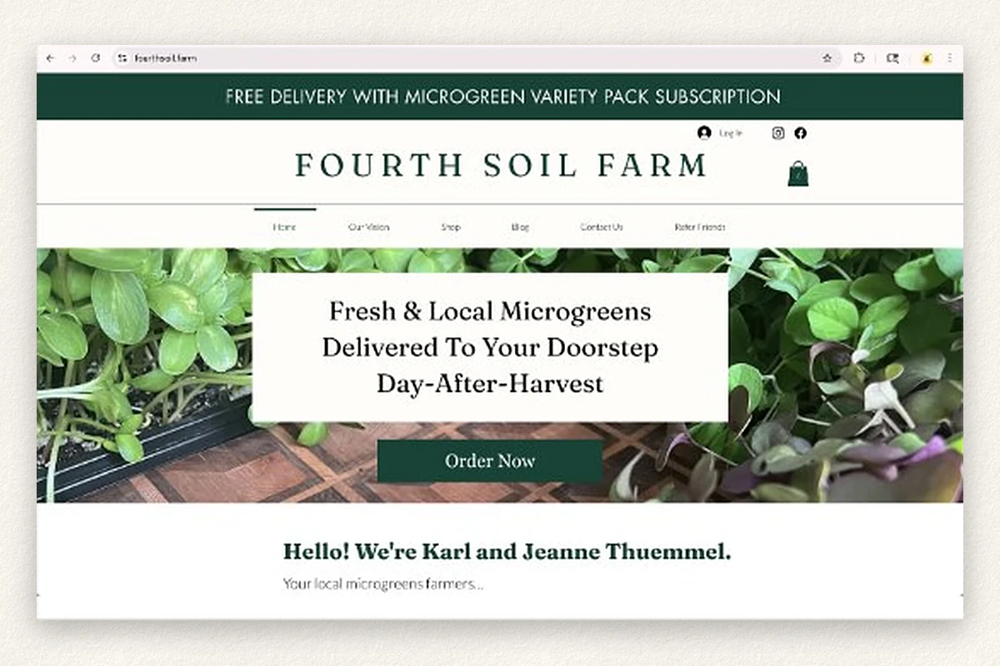

Brand identity
A simple logo, an earth-tone palette and plain typography, meant to feel warm but professional.
A microgreens startup had a good product, a basic landing page and a confusing way to buy. I helped turn that into a cohesive brand, a clearer storefront and a steadier local following.

the problem
A good product with little digital infrastructure: a basic landing page, a confusing purchase flow, no cohesive identity and limited reach.
what I did
Turned the founder's values into a brand, shot original product photos, rebuilt the storefront on Wix and kept a steady social and ad calendar.
what changed
Over the internship, link clicks to the store doubled and social engagement grew 30.6%. The farm also had a cohesive brand to grow from.
Fourth Soil Farm grows microgreens. When I joined, it had a basic landing page and a few scattered Instagram and Facebook posts. Buying was confusing, there was no consistent look, and not many people knew the farm existed.
Without clear trust signals, it was hard for likely customers to find the farm, or to feel safe buying from it.
I started with conversations with the founder about his values, his audience and how he wanted the farm to be seen. To hear the customer side, I did one customer interview, studied competitors, and spent time in microgreen Facebook groups to see what growers and buyers talked about. Three themes kept coming up, and they became the brief for everything I made.
Customers couldn't see the greens growing or meet the founder in person. The brand, the photos and the buying flow had to do that work instead.
Along the way we explored a possible Michigan-wide distribution contact. The founder chose not to pursue it, to keep the business personal and local.
It changed how I think about success for a small business. A bigger opportunity isn't a better one if it doesn't fit the owner's goals, resources and capacity.
in person, too
Not all of the work was on a screen. I also helped build relationships face to face at the Ann Arbor Farmers Market.
A simple logo, an earth-tone palette and plain typography, meant to feel warm but professional.
Original iPhone photos of texture, freshness and light, in place of stock images.
The site moved to Wix with a familiar browse, select and checkout flow, so buying took less effort.
A consistent Instagram and Facebook calendar, and Meta ad campaigns aimed at local families and restaurants.
The farm came out with a more cohesive brand, a clearer way to buy and a stronger base for reaching local customers.
Reflection
Designing for a small business means fitting the owner's goals, resources and capacity. Sometimes that means turning down a growth opportunity.